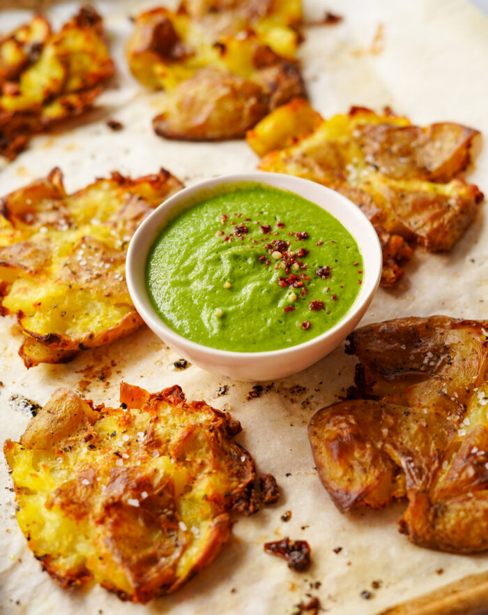

Crispy Smashed Potatoes

Description
Crispy smashed potatoes are delicious, golden brown, crispy on the outside, fluffy on the inside, and these have
an extra crispy layer of broiled Parmesan cheese on top.
There are a few extra steps involved, but they are absolutely worth the effort.
Ingredients
- 1/2 pounds (1 1/2 - to 2-inch) red skinned potatoes (12 to 16 small potatoes)
- 2 tablespoons olive oil, divided
- 1/2 teaspoon salt, divided
- 1/2 teaspoon ground black pepper, divided
- 3 ounces Parmesan cheese, finely shredded (about 3/4 cup)
- 2 tablespoons minced fresh italian parsley
Direction